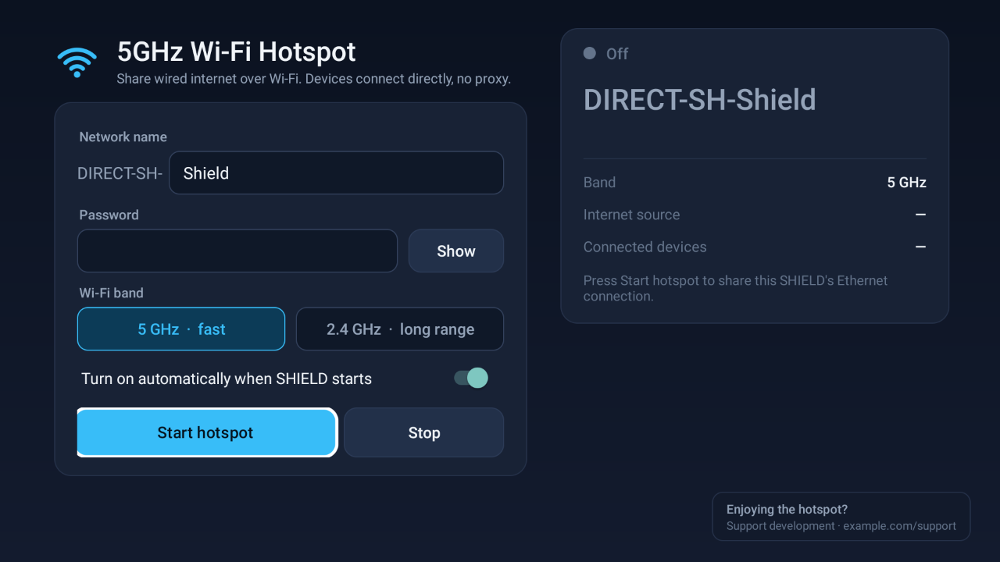

NVIDIA SHIELD TV 5GHz Wi-Fi Hotspot
Share your SHIELD TV's wired Ethernet internet over 5GHz Wi-Fi. Phones, laptops and consoles connect directly with real routing: no proxy, no root, and it starts automatically every time the SHIELD turns on.

Why it's different
No proxy
Other Android TV hotspot apps force an HTTP proxy. This app uses Android's own NAT and DHCP, so games, VPNs and every app work.
5GHz on SHIELD
SHIELD can't host a normal 5GHz access point. This app gets 5GHz through a fully routed Wi-Fi Direct group.
No root
Uses Android's Network debugging option. Nothing on the system is modified.
Set and forget
Starts at boot and repairs itself if Wi-Fi drops. Live status shows channel and connected devices.
Setup in 2 minutes
- Connect the SHIELD to your router with an Ethernet cable.
- Settings › Device Preferences › About: select Build 7 times.
- Settings › Device Preferences › Developer options: turn on Network debugging.
- Install the APK, open 5GHz Wifi Hotspot, choose a name and password, press Start hotspot.
- On the Allow USB debugging? prompt, tick Always allow. Then join
DIRECT-SH-<name>from any device.
FAQ
Can NVIDIA SHIELD TV be used as a Wi-Fi hotspot?
Not out of the box: SHIELD hides Android's hotspot feature. This app enables a real hotspot that shares the Ethernet connection over 5GHz or 2.4GHz Wi-Fi.
Do devices need a proxy?
No. They get an IP address and internet access automatically, like from any Wi-Fi router.
Does it need root?
No. It uses Android's Network debugging to reach the system tethering service.
Why does the 5GHz name start with DIRECT-?
SHIELD's Wi-Fi firmware only allows 5GHz for Wi-Fi Direct, and Wi-Fi Direct names must start with DIRECT-xx-. In 2.4GHz mode you can use any name.
Which devices are supported?
NVIDIA SHIELD TV and SHIELD TV Pro on Android 11 (tested on the 2019 SHIELD TV). Most Google TV devices lack the Network debugging option this app needs.